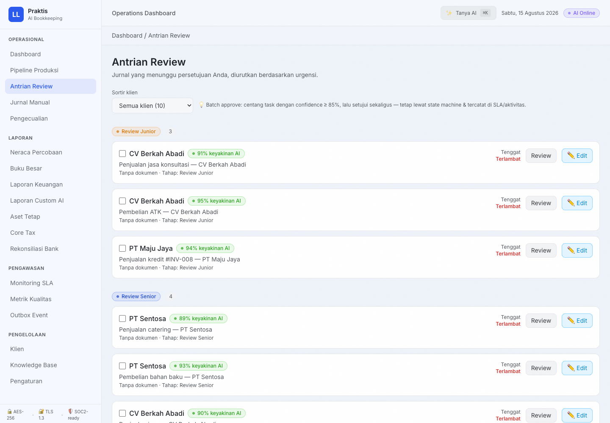
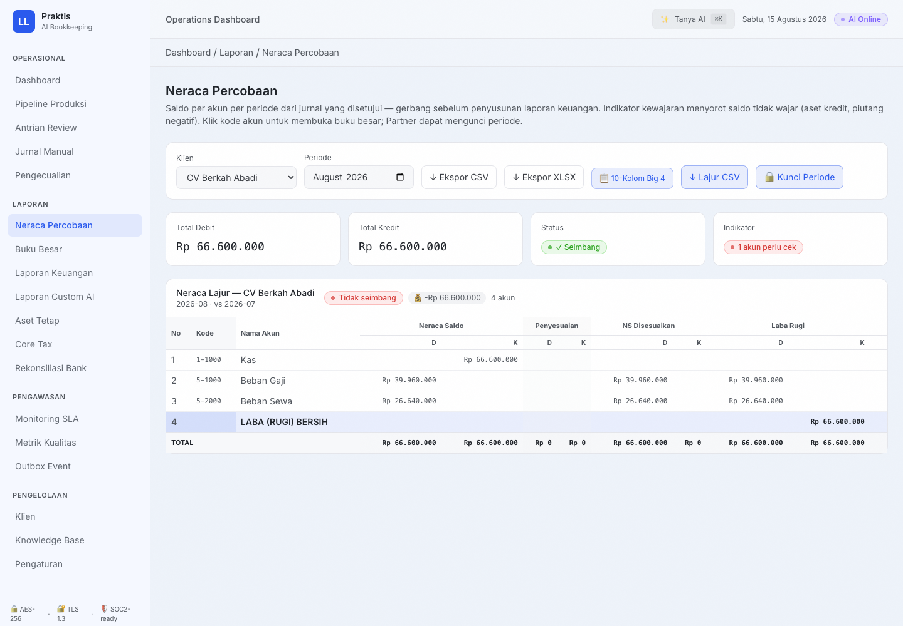
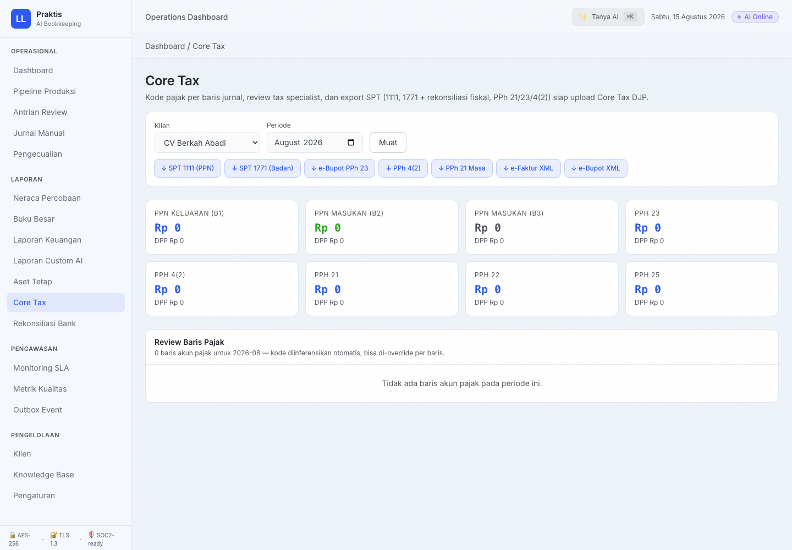
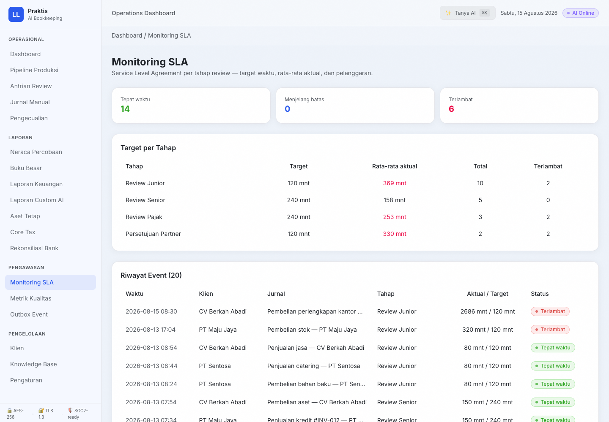
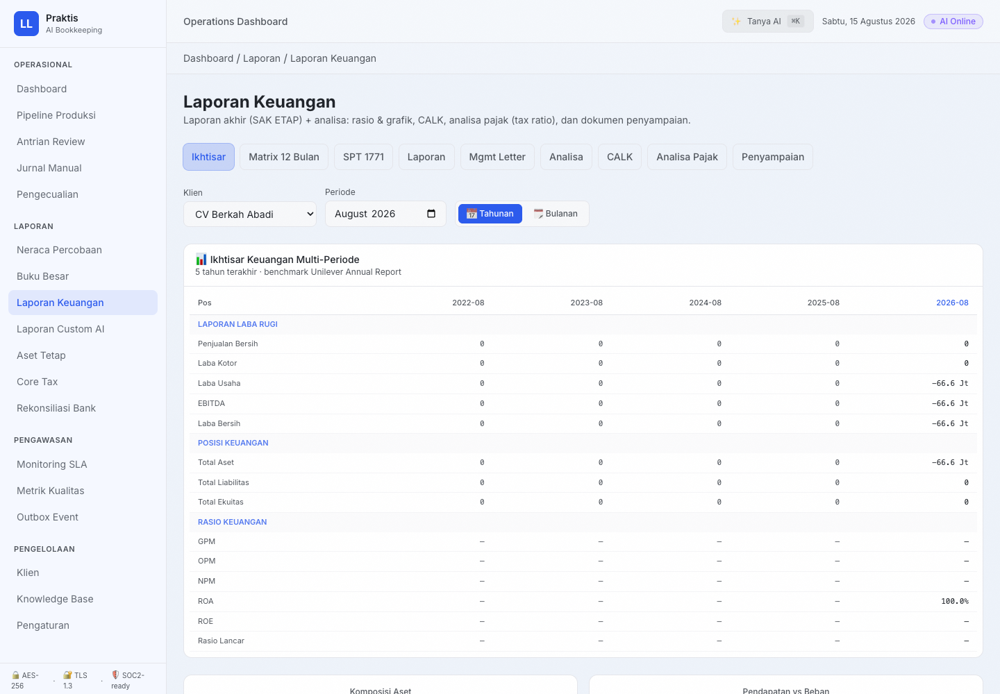
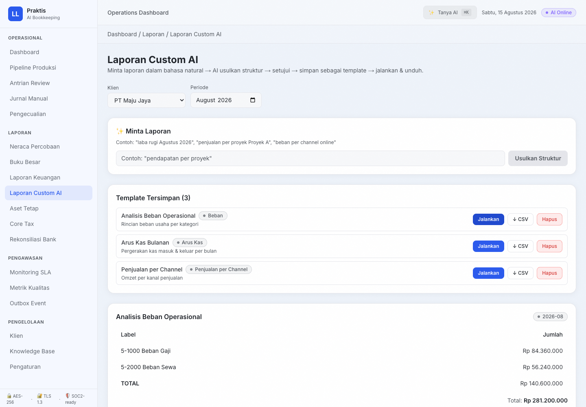
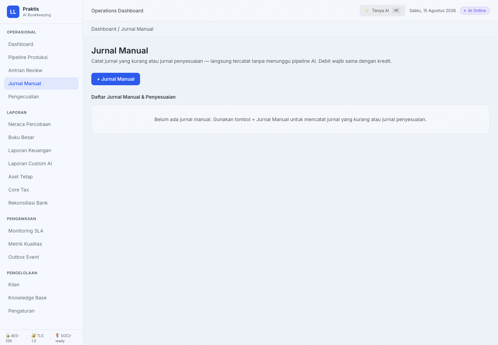
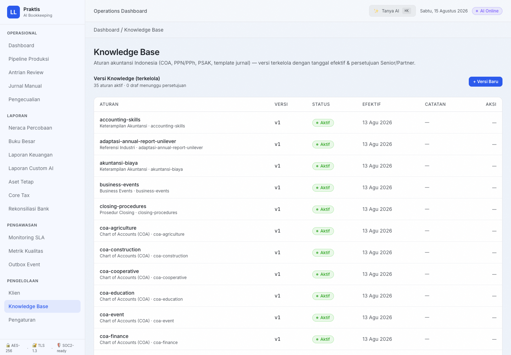
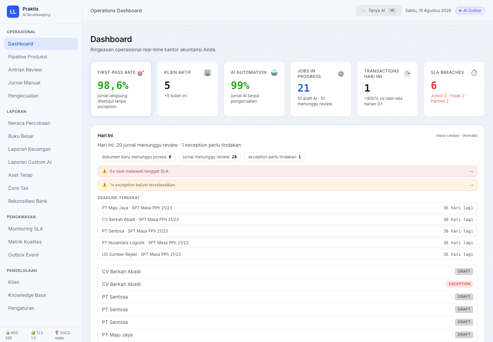
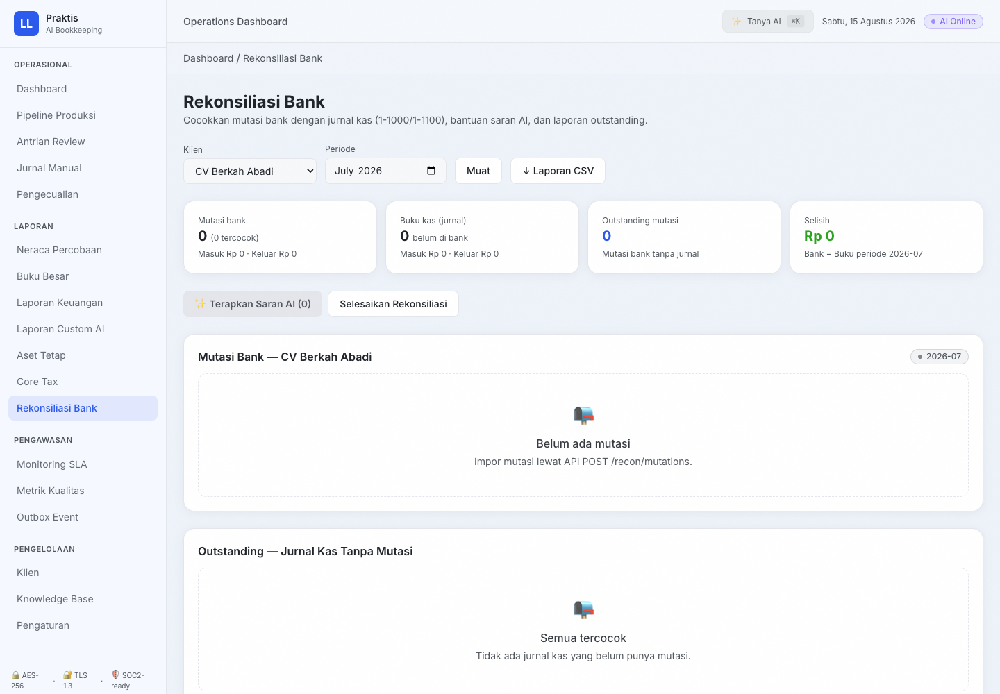

Ekspansi Segmen
Satu platform, lima wajah praktisi laporan keuangan.
Selain firma akuntan, mesin inti Praktis — upload → AI draft → review → laporan — bisa langsung dipakai konsultan pajak, konsultan manajemen, mahasiswa magang, dan karyawan akuntansi. Yang berubah hanya RBAC, modul, dan bahasa paket.
Visi
Bukan cuma firma akuntan — semua orang yang membuat laporan keuangan.
Mesin inti yang sama
Upload dokumen → OCR lokal → AI susun draft jurnal → review manusia → laporan & SPT. Satu engine, tervalidasi, PSAK/PPN-aware.
Yang berubah per segmen
- RBAC — peran & hierarki approval per profesi
- Modul — paket aktif yang relevan (tax vs analisa vs belajar)
- Bahasa & template — istilah profesi, laporan sesuai standar
- Pricing — kuota transaksi sesuai skala kerja
Segmen
Lima segmen, satu pain yang sama: entry & cleaning manual.
Segmen 1
Firma Akuntan
Melayani 25–30 klien/junior dengan review 4 lapis.
Segmen 2
Konsultan Pajak
SPT, rekonsiliasi fiskal, deadline — firma & perorangan.
Segmen 3
Konsultan Manajemen
Analisa bisnis, laporan custom, wawasan AI.
Segmen 4
Mahasiswa Magang
Belajar sambil menghasilkan — laporan akuntansi mandiri.
Segmen 5
Karyawan Akuntansi
Percepat proses akuntansi internal perusahaan.
Total pasar yang bisa dilayani membesar — bukan lagi terbatas pada jumlah firma, tapi setiap orang yang menyentuh pembukuan.
Segmen 1 · Firma Akuntan
Mesin penuh: review 4 lapis, multi-klien, SLA.


Segmen 2 · Konsultan Pajak
Fokus pajak: SPT 1771, PPN/PPh, rekonsiliasi fiskal, deadline — firma maupun perorangan.


Segmen 3 · Konsultan Manajemen
Nilai di analisa & wawasan, bukan cuma laporan.


Segmen 4 · Mahasiswa Magang
Belajar sambil menghasilkan: bikin laporan akuntansi mandiri.


Segmen 5 · Karyawan Akuntansi
Percepat kerja akuntansi internal perusahaan.


RBAC
Susunan RBAC mengikuti profesi, bukan sekadar satu hirarki.
| Segmen | Peran (role) | Hierarki approval | Modul akses |
|---|---|---|---|
| Firma Akuntan | Partner · Senior · Junior · Tax · Admin | Junior → Tax/Senior → Partner | Full suite |
| Konsultan Pajak (firma) | Partner Pajak · Konsultan Senior · Konsultan Junior | Junior → Senior → Partner Pajak | Tax, SPT, deadline, billing |
| Konsultan Pajak (perorangan) | Solo (1 akun, semua peran) | — (self-approved) | Tax, SPT, deadline |
| Konsultan Manajemen | Principal · Consultant · Analyst | Analyst → Consultant → Principal | Laporan, custom AI, analisa |
| Mahasiswa Magang | Mahasiswa · Pembimbing · Klien (view) | Mahasiswa → Pembimbing | Jurnal, laporan, learning |
| Karyawan Akuntansi | Staff · Manager Keuangan · Reviewer | Staff → Reviewer → Manager | Dashboard, recon, laporan |
Satu engine permission (role × modul × aksi) — peran baru hanya menambah mapping, bukan menulis ulang sistem.
RBAC
Matriks izin — satu tabel, berlaku lintas segmen.
| Aksi | Partner / Principal | Senior / Consultant | Junior / Analyst | Pembimbing / Reviewer | Mahasiswa / Staff | Klien (view) |
|---|---|---|---|---|---|---|
| Setujui jurnal | ✓ | ✓ | — | ✓ | — | — |
| Kunci periode (tutup buku) | ✓ | — | — | — | — | — |
| Kelola klien & COA | ✓ | ✓ | — | ✓ | — | — |
| Lihat SPT & pajak | ✓ | ✓ | ✓ | ✓ | ✓ | — |
| Entry / koreksi jurnal | ✓ | ✓ | ✓ | ✓ | ✓ | — |
| Billing & paket | ✓ | — | — | — | — | — |
| Lihat laporan (read-only) | ✓ | ✓ | ✓ | ✓ | ✓ | ✓ |
Peran segmen dipetakan ke kolom yang sama — mis. "Pembimbing" (magang) = "Reviewer" (karyawan). Satu matriks, banyak label.
Arsitektur
Satu engine, modul dinyalakan per segmen.
| Modul | Firma Akuntan | Konsultan Pajak | Konsultan Manajemen | Mahasiswa | Karyawan |
|---|---|---|---|---|---|
| Pipeline & OCR | ✓ | ✓ | ✓ | ✓ | ✓ |
| Review 4 lapis | ✓ | ✓ | ✓ | ✓ | ✓ |
| Buku besar & laporan | ✓ | ✓ | ✓ | ✓ | ✓ |
| Core Tax (SPT) | ✓ | ✓ | — | ✓ | ✓ |
| Aset & penyusutan | ✓ | ✓ | ✓ | — | ✓ |
| Laporan Custom AI | ✓ | — | ✓ | ✓ | ✓ |
| Knowledge Base (learning) | ✓ | ✓ | ✓ | ✓ | ✓ |
| Portal klien | ✓ | ✓ | ✓ | — | — |
Modul dinyalakan lewat flag paket — bukan build terpisah. Segmen baru = konfigurasi, bukan proyek baru.
Nilai
Apa yang dibedakan per segmen.
Firma Akuntan
Konsultan Pajak
Konsultan Manajemen
Mahasiswa Magang
Karyawan Akuntansi
Semua segmen
Langkah Berikutnya
Satu mesin, lima pintu masuk.
Kita mulai dari satu segmen pilot — firma, konsultan, kampus, atau perusahaan — dengan RBAC & modul yang disesuaikan. Mesinnya sudah siap.